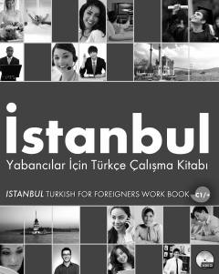

İYC1 darajasidagi chet elliklar uchun turk tili amaliy mashqlar to'plami.
Ushbu kitob chet elliklar uchun turk tilini o'rgatishga mo'ljallangan C1 darajasidagi amaliy mashqlar to'plamidir. Unda turk madaniyati, tarixi va til qoidalari bo'yicha turli xil topshiriqlar hamda o'qish matnlari jamlangan.